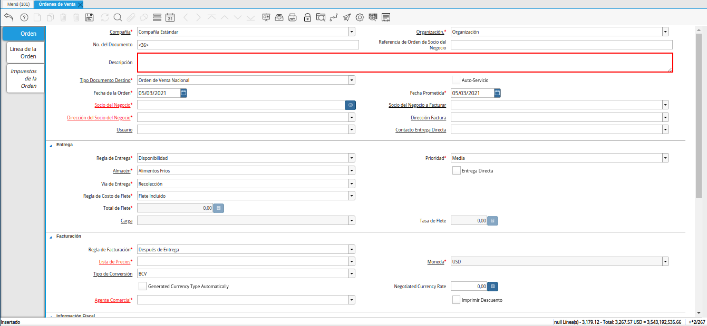

Registro de Propuesta
Ubique y seleccione en el menú de ADempiere, la carpeta “Gestión de Ventas”, luego seleccione la carpeta “Órdenes de Venta” y por último seleccione la ventana “Órdenes de Venta”.
Imagen 1. Menú de ADempiere

Podrá visualizar la ventana “Órdenes de Venta”, con los diferentes registros realizados en dicha ventana.
Imagen 2. Órdenes de Venta

Seleccione el icono “Registro Nuevo”, ubicado en la barra de herramientas de ADempiere.
Imagen 3. Icono Registro Nuevo
Seleccione en el campo “Organización”, la organización para la cual se encuentra realizando el registro.
Imagen 4. Campo Organización

Introduzca en el campo “No. del Documento”, el número de documento correspondiente al registro que se encuentra realizando.
Si no es ingresado ningún valor en este campo, al guardar el registro ADempiere toma el número de secuencia establecido para el documento.
Imagen 5. Campo No. del Documento

Introduzca en el campo “Descripción”, una breve descripción referente al registro que se encuentra realizando.

Imagen 6. Campo Descripción
Seleccione el tipo de documento a generar en el campo “Tipo de Documento Destino”, la selección de este define el comportamiento del documento que se esta elaborando, dicho comportamiento se encuentra explicado en el documento Tipo de Documento elaborado por ERPyA.
Imagen 7. Campo Tipo de Documento

Seleccione en el campo “Fecha de la Orden”, la fecha en la que se encuentra realizando el documento.
Imagen 8. Campo Fecha de la Orden
Seleccione en el campo “Socio del Negocio”, el socio del negocio correspondiente al registro que se encuentra realizando.
Imagen 9. Campo Socio del Negocio

Seleccione en el campo “Socio del Negocio a Facturar”, el socio del negocio a facturar correspondiente al registro que se encuentra realizando.
Imagen 10. Campo Socio del Negocio a Facturar

Seleccione en el campo “Dirección del Socio del Negocio”, la dirección de localización del socio del negocio.
Imagen 11. Campo Dirección del Socio del Negocio

Seleccione en el campo “Dirección Factura”, la dirección de localización para la factura.
Imagen 12. Campo Dirección Factura

Seleccione en el campo “Usuario”, el usuario correspondiente al registro que se encuentra realizando.
Imagen 13. Campo Usuario

Seleccione en el campo “Contacto Entrega Directa”, el contacto de entrega directa del socio del negocio correspondiente al registro que se encuentra realizando.
Imagen 14. Campo Contacto Entrega Directa

Seleccione en el campo “Almacén”, el almacén correspondiente al registro que se encuentra realizando.
Imagen 15. Campo Almacén

Seleccione en el campo “Lista de Precios”, la lista de precios correspondiente al registro que se encuentra realizando.
Imagen 16. Campo Lista de Precios

Podrá visualizar en el campo “Moneda”, la moneda asociada a la lista de precios seleccionada.
Imagen 17. Campo Moneda

Seleccione en el campo “Tipo de Conversión”, el tipo de conversión correspondiente al registro que se encuentra realizando.
Imagen 18. Campo Tipo de Conversión

Seleccione en el campo “Agente Comercial”, el agente comercial correspondiente al registro que se encuentra realizando.
Imagen 19. Campo Agente Comercial

Seleccione el icono “Guardar Cambios”, ubicado en la barra de herramientas de ADempiere.
Imagen 20. Icono Guardar Cambios
Seleccione la pestaña “Línea de la Orden” y proceda al llenado de los campos correspondientes.
Imagen 21. Pestaña Línea de la Orden

Seleccione en el campo “Producto”, el producto correspondiente al registro que se encuentra realizando.
Imagen 22. Campo Producto

Introduzca en el campo “Cantidad”, la cantidad correspondiente al registro que se encuentra realizando.
Imagen 23. Campo Cantidad

Seleccione en el campo “UM”, la unidad de medida correspondiente al registro que se encuentra realizando.
Imagen 24. Campo Unidad de Medida

Podrá visualizar en el campo “Precio”, el precio del producto seleccionado en base a la unidad de medida seleccionada.
Imagen 25. Campo Precio

Podrá visualizar en el campo “Precio Actual”, el precio unitario del producto seleccionado.
Imagen 26. Campo Precio Actual

Podrá visualizar en el campo “Precio de Lista”, el precio de lista oficial del producto en la moneda del documento.
Imagen 27. Campo Precio de Lista

Podrá visualizar en el campo “Neto de Línea”, el monto total a pagar por el producto sin impuestos.
Imagen 28. Campo Neto de Línea

Seleccione el icono “Guardar Cambios”, ubicado en la barra de herramientas de ADempiere.
Imagen 29. Icono Guardar Cambios
Seleccione la pestaña principal “Orden”, para proceder a preparar el documento.
Imagen 30. Pestaña Principal Orden

En el campo “Total de Líneas”, podrá visualizar el total de todas las líneas (sin impuestos) que contiene el documento.
Imagen 31. Campo Total de Líneas

En el campo “Gran Total”, podrá visualizar el total de todas las líneas (con impuestos) que contiene el documento.
Imagen 32. Campo Gran Total

Seleccione la opción “Completar”, para procesar la orden.
Imagen 33. Opción Completar

Seleccione la acción “Preparar” y la opción “OK”.
Imagen 34. Acción Preparar y Opción OK
Note
El documento “Propuesta”, debe quedar en estado “En Proceso”, para ello se debe seleccionar la opción “Preparar”.

Seleccione el icono “Imprimir”, ubicado en la barra de herramientas de ADempiere.
Imagen 35. Icono Imprimirpara generar el reporte
Podrá visualizar la ventana “Informe”, con el reporte del documento “Propuesta”, donde puede seleccionar el icono imprimir del mismo para generar el documento impreso.
Imagen 36. Reporte de Propuesta